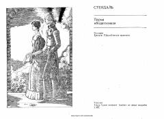

PIStendalning mashhur asari Italiya va Fransiyadagi muhabbat hamda siyosiy intrikalarga boy tarixiy roman.
Ushbu asar mashhur yozuvchi Stendal tomonidan yozilgan bo'lib, Italiya va Fransiyadagi tarixiy voqealar, shaxsiy munosabatlar hamda intrikalar fonida kechuvchi muhabbat va sarguzashtlarni hikoya qiladi. Kitobda 1830-yilgi qo'lyozmaga asoslangan holda qahramonlarning ichki kechinmalari va o'sha davr muhiti mahorat bilan ochib berilgan.